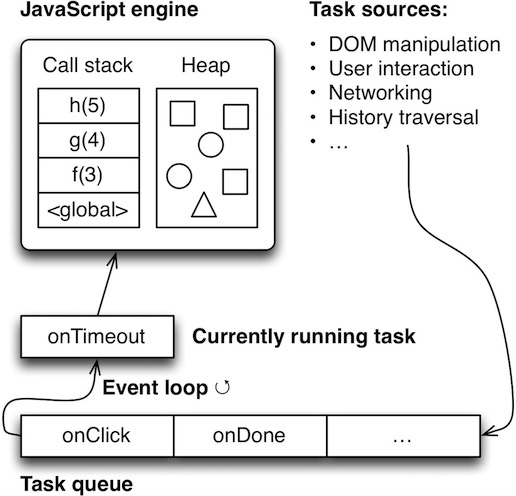

<!DOCTYPE html>
<html>
<head>
  <meta charset="utf-8">
  
  <title>JavaScript 异步(1)-Event loop | rainyleo blog</title>
  <meta name="viewport" content="width=device-width, initial-scale=1, maximum-scale=1">
  <meta name="description" content="概述Event loop 是实现异步的一种机制, JS runtime 通过这种机制来处理不同的任务(task), 这些任务包括 events,callback, parsing, DOM manipulation, Using a resource等等  
TaskJavaScript runtime 把一切抽象为 task, 用户操作, I/O操作, 网络请求等等都是一个个的 task, 这些">
<meta property="og:type" content="article">
<meta property="og:title" content="JavaScript 异步(1)-Event loop">
<meta property="og:url" content="http://www.rainyleo.com/2016/09/16/JavaScript_Event_Loop/index.html">
<meta property="og:site_name" content="rainyleo blog">
<meta property="og:description" content="概述Event loop 是实现异步的一种机制, JS runtime 通过这种机制来处理不同的任务(task), 这些任务包括 events,callback, parsing, DOM manipulation, Using a resource等等  
TaskJavaScript runtime 把一切抽象为 task, 用户操作, I/O操作, 网络请求等等都是一个个的 task, 这些">
<meta property="og:image" content="http://www.rainyleo.com/event_loop.jpg">
<meta property="og:updated_time" content="2016-11-07T12:48:20.000Z">
<meta name="twitter:card" content="summary">
<meta name="twitter:title" content="JavaScript 异步(1)-Event loop">
<meta name="twitter:description" content="概述Event loop 是实现异步的一种机制, JS runtime 通过这种机制来处理不同的任务(task), 这些任务包括 events,callback, parsing, DOM manipulation, Using a resource等等  
TaskJavaScript runtime 把一切抽象为 task, 用户操作, I/O操作, 网络请求等等都是一个个的 task, 这些">
<meta name="twitter:image" content="http://www.rainyleo.com/event_loop.jpg">
  
    <link rel="alternate" href="/atom.xml" title="rainyleo blog" type="application/atom+xml">
  
  
    <link rel="icon" href="/favicon.png">
  
  
    <!-- <link href="//fonts.googleapis.com/css?family=Source+Code+Pro" rel="stylesheet" type="text/css"> -->
  
  <link rel="stylesheet" href="/css/style.css">
  

</head>

<body>
  <div id="container">
    <div id="wrap">
      <header id="header">
  <div id="banner"></div>
  <div id="header-outer" class="outer">
    <div id="header-title" class="inner">
      <h1 id="logo-wrap">
        <a href="/" id="logo">rainyleo blog</a>
      </h1>
      
    </div>
    <div id="header-inner" class="inner">
      <nav id="main-nav">
        <a id="main-nav-toggle" class="nav-icon"></a>
        
          <a class="main-nav-link" href="/">Home</a>
        
          <a class="main-nav-link" href="/archives">Archives</a>
        
          <a class="main-nav-link" href="/about">About</a>
        
      </nav>
      <nav id="sub-nav">
        
          <a id="nav-rss-link" class="nav-icon" href="/atom.xml" title="RSS Feed"></a>
        
        <a id="nav-search-btn" class="nav-icon" title="Search"></a>
      </nav>
      <div id="search-form-wrap">
        <form action="//google.com/search" method="get" accept-charset="UTF-8" class="search-form"><input type="search" name="q" results="0" class="search-form-input" placeholder="Search"><button type="submit" class="search-form-submit">&#xF002;</button><input type="hidden" name="sitesearch" value="http://www.rainyleo.com"></form>
      </div>
    </div>
  </div>
</header>
      <div class="outer">
        <section id="main"><article id="post-JavaScript_Event_Loop" class="article article-type-post" itemscope itemprop="blogPost">
  <div class="article-meta">
    <a href="/2016/09/16/JavaScript_Event_Loop/" class="article-date">
  <time datetime="2016-09-16T01:57:45.000Z" itemprop="datePublished">2016-09-16</time>
</a>
    
  </div>
  <div class="article-inner">
    
    
      <header class="article-header">
        
  
    <h1 class="article-title" itemprop="name">
      JavaScript 异步(1)-Event loop
    </h1>
  

      </header>
    
    <div class="article-entry" itemprop="articleBody">
      
        <h2 id="概述"><a href="#概述" class="headerlink" title="概述"></a>概述</h2><p>Event loop 是实现异步的一种机制, JS runtime 通过这种机制来处理不同的任务(task), 这些任务包括 events,callback, parsing, DOM manipulation, Using a resource等等  </p>
<h3 id="Task"><a href="#Task" class="headerlink" title="Task"></a>Task</h3><p>JavaScript runtime 把一切抽象为 task, 用户操作, I/O操作, 网络请求等等都是一个个的 task, 这些 task 被放在不同的 queue 中等待执行.<br>task queue 分为两大类, 分别是 macrotask queue 和 microtask quque, macrotask queue 通常称为 task queue, 有时候也叫做 message queue 或 callback queue, microtask queue 在 ES6 中也叫做 job queue.</p>
<p><strong>task queue (macrotask queue)</strong></p>
<ul>
<li>task queue 是包含 tasks 的有序队列, 先进先出(FIFO)的规则</li>
<li>一个 event loop 有1个或多个 task queue </li>
</ul>
<p>每一个task(macro)都来自一个 <em>task source</em>. 同一个来源的 task 形成一个 task queue, 不同来源的 task 组成不同的task queue. 例如浏览器可能会为鼠标和键盘事件建立一个 task queue, 为其他 task 建立另一个 task queue, 浏览器可能为鼠标和键盘的 task queue设置更高的优先级<br><a id="more"></a></p>
<p><strong>microtask queue (job queue)</strong></p>
<ul>
<li>microtask queue 是包含 microtasks 的有序队列, 先进先出(FIFO)的规则</li>
<li>event loop 的每一次循环(tick) 有一个 microtask queue (ES6 中叫做 job queue)</li>
</ul>
<p><strong>task 总结</strong></p>
<ul>
<li>一个 task 可能进入 macrotask queue, 也可能进入 microtask queue, 取决于 task 的类型</li>
<li>当一个 task 进入 queue 中(macro/micro), 就在排队等待执行了</li>
<li>macrotasks: callback, events, setTimeout, setInterval, setImmediate, I/O, UI rendering</li>
<li>microtasks: Promises, Object.observe, process.nextTick, MutationObserver</li>
</ul>
<h3 id="call-stack"><a href="#call-stack" class="headerlink" title="call stack"></a>call stack</h3><p>task queue 中的一个个 task 在哪里执行呢, 答案就是 JavaScript 引擎内部的 call stack. </p>
<ul>
<li>call stack 是一种后进先出(LIFO)的数据结构, 有进栈(push)和出栈(pop)两种操作, push 和 pop 都从 stack 的顶部进行</li>
<li>当一个函数开始执行时, 一个新的 frame 会进入 call stack, 这个 frame 存储了局部变量, 函数参数和一个指向调用函数的的地址的指针 </li>
<li>如果 a 函数调用了 b 函数, 函数 b 的一个 frame 会进入 stack, 它在函数 a 的stack 的上面</li>
<li>当函数 b 执行完, 它的 frame 被弹出栈, 程序继续从这个 frame 里存储的地址开始执行</li>
</ul>
<p>JavaScript 是单线程的, 只有1个 call stack, 一次只能运行一个代码块. </p>
<h2 id="Event-Loop"><a href="#Event-Loop" class="headerlink" title="Event Loop"></a>Event Loop</h2><p>Event loop 的工作很简单, 只要存在 task, event loop 就会一直运行直到 queue 为空. 它会一直检查 call stack, 如果发现 call stack 里面是空的, 就把 queue 中的第一个 task 取出, 把它 push 到 call stack 中, 让 JS 引擎来执行.   </p>
<p></p>
<p>上面说的是 只有 task queue 的简单情况, 当存在 microtask queue 时, 情况稍微复杂一些.</p>
<ol>
<li>Event loop 检查到 call stack 为空时, 把 task queue 中的第一个 task 取出放进 call stack 中执行</li>
<li>把 microtask queue 中的所有 microtask 一个接一个取出放进 call stack 中执行.</li>
<li>重复第一步</li>
</ol>
<p>以上过程构成一次循环, event loop 的每一次循环叫做一个 <code>tick</code>. </p>
<p><em>注意</em></p>
<ol>
<li>一个 microtask 产生的 microtask 会继续在本次循环中执行, 一个 macrotask 产生的 macrotask 会在下个循环中执行.</li>
<li>一段 JS 代码算一个 macrotask</li>
</ol>
<h2 id="例题"><a href="#例题" class="headerlink" title="例题"></a>例题</h2><figure class="highlight js"><table><tr><td class="gutter"><pre><div class="line">1</div><div class="line">2</div><div class="line">3</div><div class="line">4</div><div class="line">5</div><div class="line">6</div><div class="line">7</div><div class="line">8</div><div class="line">9</div><div class="line">10</div><div class="line">11</div><div class="line">12</div><div class="line">13</div><div class="line">14</div><div class="line">15</div><div class="line">16</div><div class="line">17</div><div class="line">18</div><div class="line">19</div><div class="line">20</div><div class="line">21</div><div class="line">22</div><div class="line">23</div><div class="line">24</div><div class="line">25</div><div class="line">26</div><div class="line">27</div><div class="line">28</div><div class="line">29</div></pre></td><td class="code"><pre><div class="line"><span class="built_in">console</span>.log(<span class="string">"console before"</span>);</div><div class="line"></div><div class="line">setTimeout(<span class="function"><span class="params">()</span> =&gt;</span> &#123;</div><div class="line">  <span class="built_in">console</span>.log(<span class="string">"SetTimeout before"</span>);</div><div class="line">&#125;, <span class="number">0</span>);</div><div class="line"></div><div class="line"><span class="keyword">new</span> <span class="built_in">Promise</span>(<span class="function">(<span class="params">resolve</span>) =&gt;</span> &#123;</div><div class="line">  resolve();</div><div class="line">&#125;)</div><div class="line">.then(<span class="function"><span class="params">()</span> =&gt;</span> &#123;</div><div class="line">  <span class="built_in">console</span>.log(<span class="string">"Promise 1"</span>);</div><div class="line">&#125;)</div><div class="line">.then(<span class="function"><span class="params">()</span> =&gt;</span> &#123;</div><div class="line">  <span class="built_in">console</span>.log(<span class="string">"Promise 2"</span>);</div><div class="line">&#125;);</div><div class="line"></div><div class="line">setTimeout(<span class="function"><span class="params">()</span> =&gt;</span> &#123;</div><div class="line">  <span class="built_in">console</span>.log(<span class="string">"SetTimeout end"</span>);</div><div class="line">&#125;, <span class="number">0</span>);</div><div class="line"></div><div class="line"><span class="built_in">console</span>.log(<span class="string">"console end"</span>);</div><div class="line"></div><div class="line"><span class="comment">// 输出结果为:</span></div><div class="line"><span class="comment">// console before</span></div><div class="line"><span class="comment">// console end</span></div><div class="line"><span class="comment">// Promise 1</span></div><div class="line"><span class="comment">// Promise 2</span></div><div class="line"><span class="comment">// SetTimeout before</span></div><div class="line"><span class="comment">// SetTimeout end</span></div></pre></td></tr></table></figure>
<p>执行过程如下:</p>
<ol>
<li>一个Event loop 循环开始, 把这段代码作为一个 macrotask 放入 call stack 中执行.</li>
<li>输出 ‘console before’</li>
<li>第一个 setTimeout 执行, js 引擎发现这是外部 API 把它弹出 call stack (浏览器设置一个定时器, 定时时间到, 把回调函数加入 task queue) 注: 括号内是异步进行的 </li>
<li>promise.then() 内的回调进入 microtask queue</li>
<li>第二个 setTimeout 执行, 同上</li>
<li>输出 ‘console end’</li>
<li>当前 tick 中的 macrotask 已经执行完了, 然后依次执行 microtask queue 中所有的 microtask, 输出 ‘Promise 1’, ‘Promise 2’, 本次循环结束</li>
<li>下一个 Event loop 循环开始, 输出 ‘SetTimeout before’, microtask queue 中没有 task, 循环结束</li>
<li>下一个 Event loop 循环开始, 输出 ‘SetTimeout after’</li>
</ol>
<p>参考链接:<br><a href="https://developer.mozilla.org/en-US/docs/Web/JavaScript/EventLoop" target="_blank" rel="external">Concurrency model and Event Loop</a><br><a href="https://www.youtube.com/watch?v=8aGhZQkoFbQ" target="_blank" rel="external">Philip Roberts: What the heck is the event loop anyway?</a><br><a href="https://github.com/getify/You-Dont-Know-JS/tree/master/async%20%26%20performance" target="_blank" rel="external">Async and Performance</a><br><a href="http://exploringjs.com/es6/ch_async.html" target="_blank" rel="external">Asyncronous Programming</a><br><a href="https://html.spec.whatwg.org/multipage/webappapis.html#event-loops" target="_blank" rel="external">event-loop</a></p>

      
    </div>
    <footer class="article-footer">
      <a data-url="http://www.rainyleo.com/2016/09/16/JavaScript_Event_Loop/" data-id="cjg7w5t4s000hv31nt4zbs8b0" class="article-share-link">Share</a>
      
      
  <ul class="article-tag-list"><li class="article-tag-list-item"><a class="article-tag-list-link" href="/tags/JavaScript/">JavaScript</a></li></ul>

    </footer>
  </div>
  
    
<nav id="article-nav">
  
    <a href="/2016/09/20/Javascript-promise/" id="article-nav-newer" class="article-nav-link-wrap">
      <strong class="article-nav-caption">Newer</strong>
      <div class="article-nav-title">
        
          JavaScript 异步(2)-Promise
        
      </div>
    </a>
  
  
    <a href="/2016/08/20/JavaScript_Object_Methods/" id="article-nav-older" class="article-nav-link-wrap">
      <strong class="article-nav-caption">Older</strong>
      <div class="article-nav-title">一张图看明白JavaScript中对象的方法</div>
    </a>
  
</nav>

  
</article>


</section>
        
          <aside id="sidebar">
  
    

  
    
  <div class="widget-wrap">
    <h3 class="widget-title">Tag Cloud</h3>
    <div class="widget tagcloud">
      <a href="/tags/CSS/" style="font-size: 13.33px;">CSS</a> <a href="/tags/JavaScript/" style="font-size: 20px;">JavaScript</a> <a href="/tags/React/" style="font-size: 16.67px;">React</a> <a href="/tags/Vue/" style="font-size: 10px;">Vue</a> <a href="/tags/atom/" style="font-size: 10px;">atom</a> <a href="/tags/webpack/" style="font-size: 10px;">webpack</a>
    </div>
  </div>

  
    
  <div class="widget-wrap">
    <h3 class="widget-title">Archives</h3>
    <div class="widget">
      <ul class="archive-list"><li class="archive-list-item"><a class="archive-list-link" href="/archives/2018/02/">February 2018</a><span class="archive-list-count">1</span></li><li class="archive-list-item"><a class="archive-list-link" href="/archives/2017/03/">March 2017</a><span class="archive-list-count">1</span></li><li class="archive-list-item"><a class="archive-list-link" href="/archives/2017/01/">January 2017</a><span class="archive-list-count">1</span></li><li class="archive-list-item"><a class="archive-list-link" href="/archives/2016/12/">December 2016</a><span class="archive-list-count">2</span></li><li class="archive-list-item"><a class="archive-list-link" href="/archives/2016/11/">November 2016</a><span class="archive-list-count">1</span></li><li class="archive-list-item"><a class="archive-list-link" href="/archives/2016/10/">October 2016</a><span class="archive-list-count">7</span></li><li class="archive-list-item"><a class="archive-list-link" href="/archives/2016/09/">September 2016</a><span class="archive-list-count">2</span></li><li class="archive-list-item"><a class="archive-list-link" href="/archives/2016/08/">August 2016</a><span class="archive-list-count">3</span></li><li class="archive-list-item"><a class="archive-list-link" href="/archives/2016/03/">March 2016</a><span class="archive-list-count">1</span></li><li class="archive-list-item"><a class="archive-list-link" href="/archives/2015/02/">February 2015</a><span class="archive-list-count">1</span></li></ul>
    </div>
  </div>


  
    
  <div class="widget-wrap">
    <h3 class="widget-title">Recent Posts</h3>
    <div class="widget">
      <ul>
        
          <li>
            <a href="/2018/02/04/FormData-Blob-ArrayBuffer/">FormData, Blob, ArrayBuffer</a>
          </li>
        
          <li>
            <a href="/2017/03/06/Vue-vs-React/">Vue vs React</a>
          </li>
        
          <li>
            <a href="/2017/01/21/webpack-code-split/">webpack 中使用 code splitting</a>
          </li>
        
          <li>
            <a href="/2016/12/26/Vue-源码解读-模板编译/">Vue 源码解读-模板编译</a>
          </li>
        
          <li>
            <a href="/2016/12/15/Vue-源码解读1-响应式系统/">Vue 源码解读-响应式系统</a>
          </li>
        
      </ul>
    </div>
  </div>

  
</aside>
        
      </div>
      <footer id="footer">
  
  <div class="outer">
    <div id="footer-info" class="inner">
      &copy; 2018 rainyLeo<br>
      Powered by <a href="http://hexo.io/" target="_blank">Hexo</a>
    </div>
  </div>
</footer>
<script src="//cdn.bootcss.com/jquery/3.1.1/jquery.min.js"></script>

<div id="totop" style="position:fixed;bottom:120px;right:50px;cursor: pointer;">
	<a title="返回顶部"></a>
</div>
<script src="/js/totop.js"></script>
<!-- to top -->
    </div>
    <nav id="mobile-nav">
  
    <a href="/" class="mobile-nav-link">Home</a>
  
    <a href="/archives" class="mobile-nav-link">Archives</a>
  
    <a href="/about" class="mobile-nav-link">About</a>
  
</nav>
    


<script src="//cdn.bootcss.com/jquery/3.1.1/jquery.min.js"></script>


  <link rel="stylesheet" href="/fancybox/jquery.fancybox.css">
  <script src="/fancybox/jquery.fancybox.pack.js"></script>


<script src="/js/script.js"></script>


  </div>
</body>
</html>